ZeroG — Minecraft 1.21.1 design collection
Design assets, not a new playable release. Individual projects retain animation clips.
Full Blockbench showcase · 20-set armour showcase · Descriptions and future updates · Hashed inventory
Armour — 20 fitted sets (20)
Apiary blocks (85)
Apiary items and frames (150)
Apiary multiblocks (8)
Apiarist wearables (8)
Material blocks (94)
Material items (71)
Mobs — existing committed designs (28)
Shattered Skies — style variants (37)
Mob drops (65)
Spawn eggs (38)
Approved Tidewraith — regular and boss palettes (5)
Player-fitted armour
Astrium
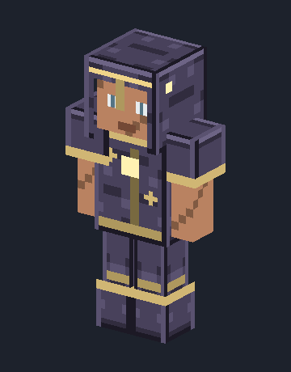
Aurelion
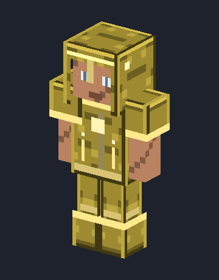
Cerulite
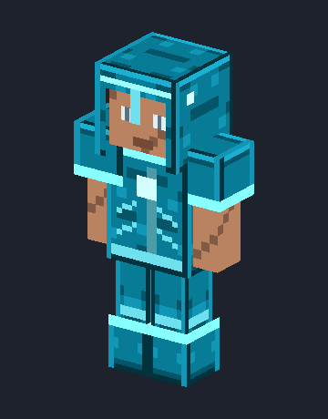
Cobaltium
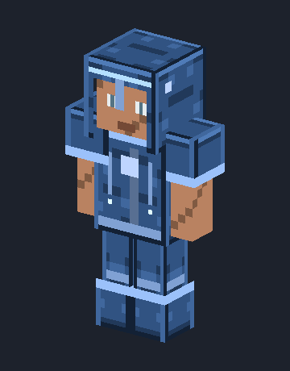
Cyrrium
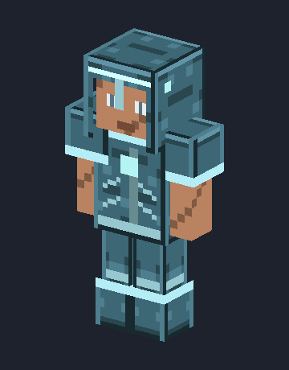
Eidolite
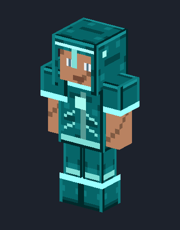
Ferrox
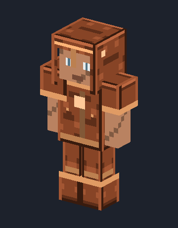
Moonsteel
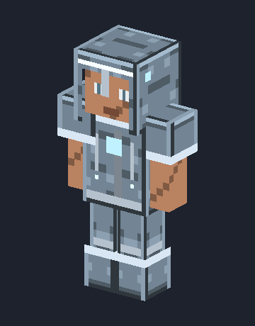
Nullifite
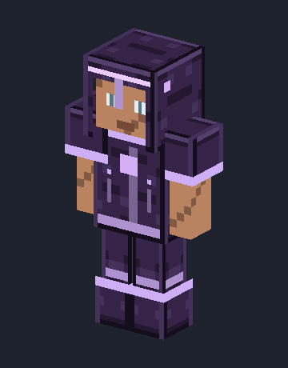
Olympium
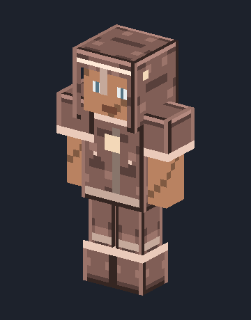
Palladine
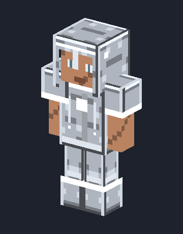
Photium
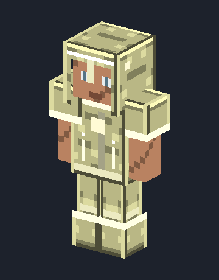
Pyrium
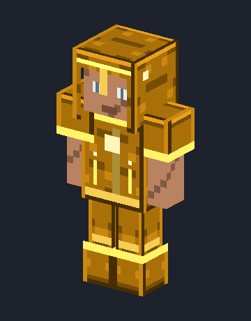
Radiantine
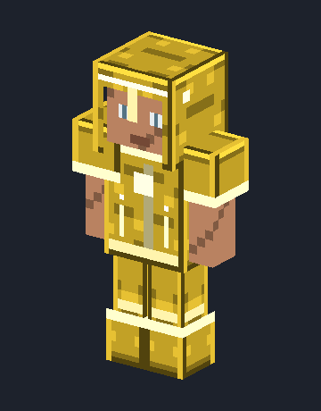
Ruskite
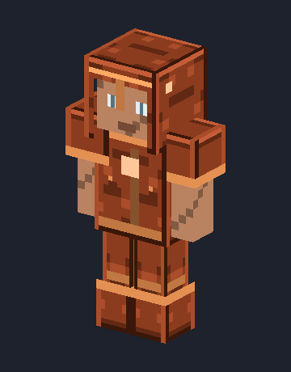
Salvium
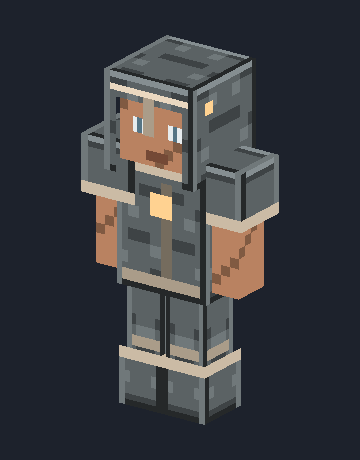
Skarnite
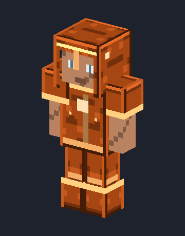
Solvanite
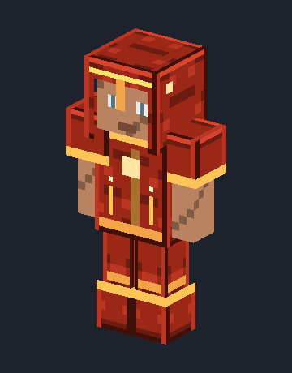
Tectium
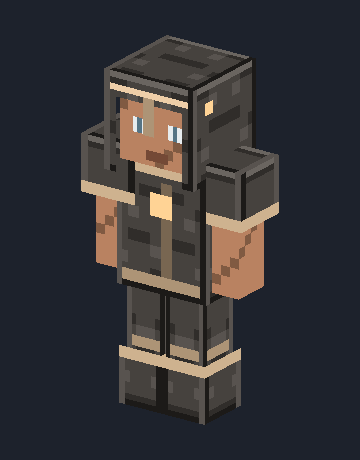
Wraithsteel
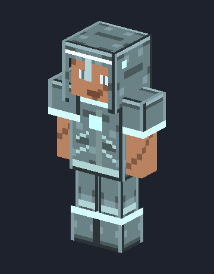